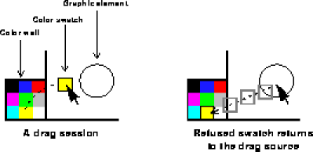

he drag and drop framework lets a user interact with an application by clicking an object with the mouse and dragging it. For example, in a drawing program, the user could set the color of a graphic element by dragging a color swatch from a chooser and dropping it on the element.
The IFC provides a framework for adding drag and drop behavior to Java applications. Because Java does not let you access the built-in drag and drop subsystem of your platform, the IFC framework supports drag and drop only within an application. However, even with this limitation, drag and drop is an extremely useful feature.
he drag and drop framework lets a user interact with an application by clicking an object with the mouse and dragging it. For example, in a drawing program, the user could set the color of a graphic element by dragging a color swatch from a chooser and dropping it on the element.
The IFC provides a framework for adding drag and drop behavior to Java applications. Because Java does not let you access the built-in drag and drop subsystem of your platform, the IFC framework supports drag and drop only within an application. However, even with this limitation, drag and drop is an extremely useful feature.
DragSource and DragDestination interfaces, respectively. Use the mouseDown or mouseDragged method of the drag source View to create an instance of DragSession, the class that implements drag and drop behavior. DragSession is responsible for tracking the mouse pointer with an image, querying the destination, and returning the dragged object to the drag source.
For example, a color well object is a drag source because it is a subclass of DragWell, which implements the DragSource interface. Clicking within a color well creates a drag session and displays a color swatch that tracks the mouse pointer. When the user releases the mouse button, the drag destination beneath the swatch either accepts the color or refuses it.
A drag session with a color well

Here are the general steps you take to provide drag and drop support in an application:
DragSource interface for objects that are available as drag sources. See "Specifying a drag source" on page 55.
mouseDragged method of source objects to create an instance of DragSession. See "Initiating a drag session" on page 56.
DragDestination interface for objects that accept dragged objects. See "Specifying a drag destination" on page 57.
acceptsDrag method of View to return a value. See "Specifying a drag destination" on page 57.
DragSource interface, which contains the methods listed in Table 5.1.
|
Method
|
Description
| dragWasAccepted
Called when a destination accepts a drag. |
| dragWasRejected
Called when a destination rejects a drag. |
| sourceView
Returns the view that initiated the drag session. |
|
|---|
For example, suppose you are creating a drawing application that displays items on a palette; users can drag items from the palette and drop them into the work space of your application. You can create the IconView class as an abstract superclass of the views that appear to the user as items on the palette. You can make IconView available as a drag source by providing an implementation for the DragSource methods such as the following:
public abstract class IconView extends View implements DragSource {
The sample Aquarium application contains another example of specifying a drag source. See the file
public void dragWasAccepted(DragSession session) {
}
public boolean dragWasRejected(DragSession session) {
return true;
}
public View sourceView(DragSession session) {
return this;
}
...
}IconView.java in the Aquarium folder within the Examples folder.
DragSession class performs most of the work for drag and drop support. A drag session object tracks the mouse pointer as the user drags the mouse. On each move, the drag session object notifies the views beneath the pointer that it has entered, moved within, exited, or been released within their bounds.
Override the mouseDown or mouseDragged method of the drag source to initiate a drag session. The following code shows the prototype of the DragSession constructor:
public DragSession(DragSource source, Image image,The image in the constructor represents the data that the user is manipulating; the image tracks the mouse as the user drags. The initialX and initialY parameters specify the initial location of the image; mouseDownX and mouseDownY specify the initial location of the mouse. Specify these integers relative to the coordinate system of the drag source. Specify the actual data and the type of data that the user is manipulating in the constructor, and optionally change them with the
int initialX, int initialY,
int mouseDownX, int mouseDownY,
String dataType, Object data)
setData and setDataType methods.
For example, a drag well can intitiate a drag session when a user drags the mouse within it, as shown in the following example:
public void mouseDragged(MouseEvent event) {
new DragSession(this, image(),
0, 0,
event.x, event.y,
dataType(), data());
}
In this example, the image, data type, and data used by the constructor are returned by the image, dataType, and data methods of the DragWell itself. The actual implementation of DragSession in DragWell is slightly more complicated; it has been simplified for this example.
The sample Aquarium application initiates a drag session within the mouseDragged method. See the file IconView.java in the Aquarium folder within the Examples folder.
DragDestination interface, which contains the methods listed in Table 5.2.
To provide minimal drag and drop functionality, use the implementation of the dragDropped method to handle a dropped object, and simply return from the other methods. If you want to enhance the functionality of your application, you can handle other user actions in the implementation of dragEntered, dragMoved,and dragExited. For example, if you want to animate a view to indicate that it is a valid drop destination, begin the animation within dragEntered and end it within dragExited.
A drag session object sends messages to call the methods in DragDestination in response to user actions. Any object that implements DragDestination receives these messages as the drag session object moves over it.
If the drag destination is a view, override its acceptsDrag method to return a value. By default, acceptsDrag returns null. Specify the view that is the recipient of drag messages as the value of acceptsDrag.
For example, suppose you want to create a text field that accepts a color dragged from a color well. To specify this drag destination, create a subclass of TextField, return the view itself within the acceptsDrag method, and handle the drop in the implementation of the dragDropped method, as shown in the following code:
public class ColorField extends TextField implements DragDestination{
As shown in the previous example, use the
ColorField(int x, int y, int width, int height) {
super(x, y, width, height);
}
public DragDestination acceptsDrag(DragSession dragSession,
int x, int y) {
if (Color.COLOR_TYPE.equals(dragSession.dataType())) {
return this;
} else {
return null;
}
}
public boolean dragDropped(DragSession dragSession) {
Color color;
color = ((Color)dragSession.data());
setBackgroundColor(color);
draw();
return true;
}
public boolean dragEntered(DragSession dragSession) {
return true;
}
public boolean dragMoved(DragSession dragSession) {
return true;
}
public void dragExited(DragSession dragSession) {
}
}acceptsDrag method to examine the data type of the item a user is dropping. To reject the item, return null; by default, the item returns to the drag source. To accept the item, return a value.
Typically, the drag destination returned in the acceptsDrag method of a view is the view itself, as shown in the previous example. However, you can return any object that implements the DragDestination interface. For example, acceptsDrag can return a controller object as the recipient of drag messages.